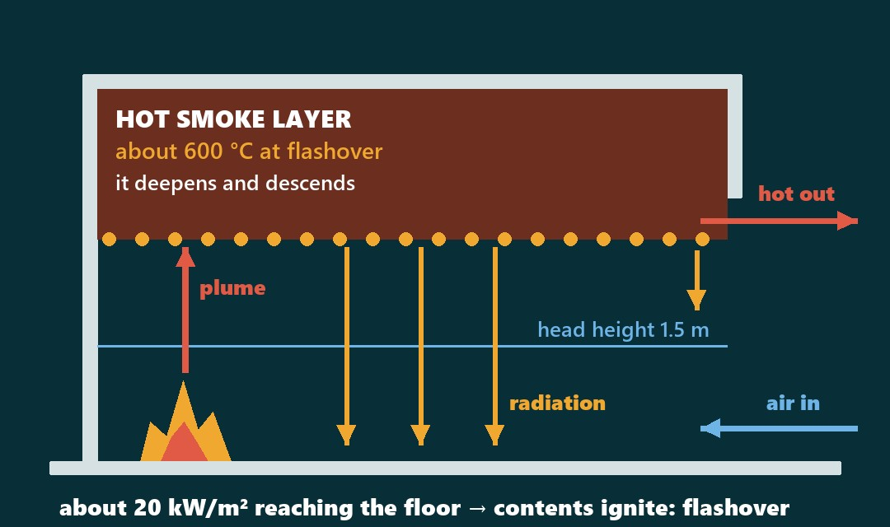
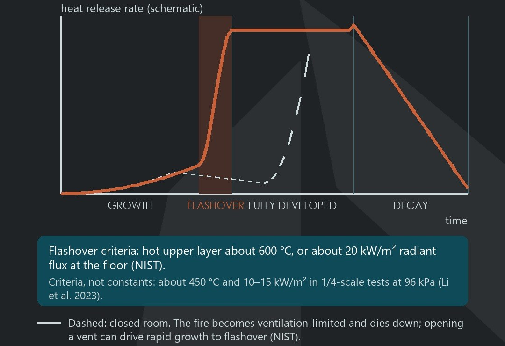
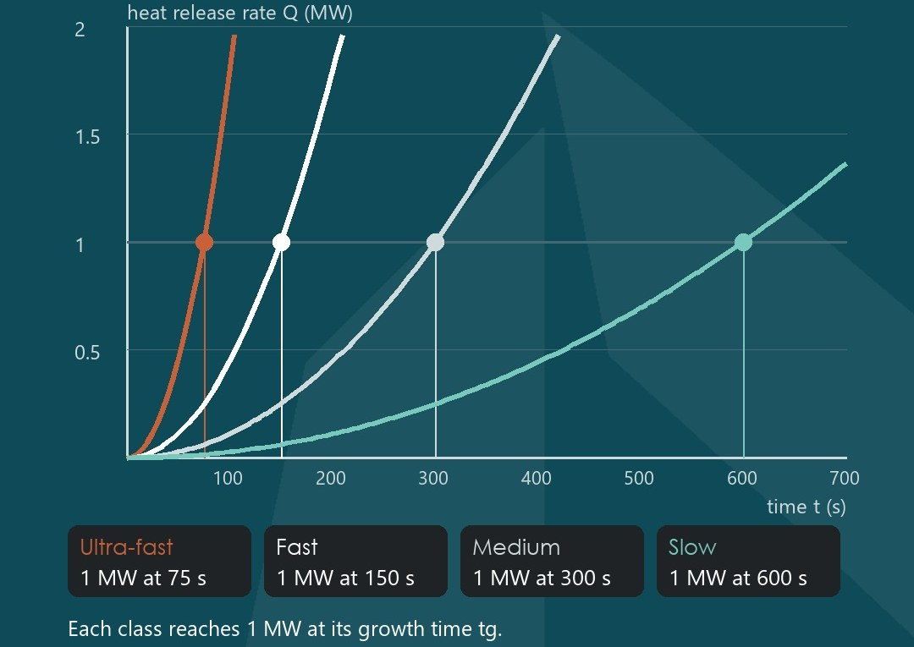
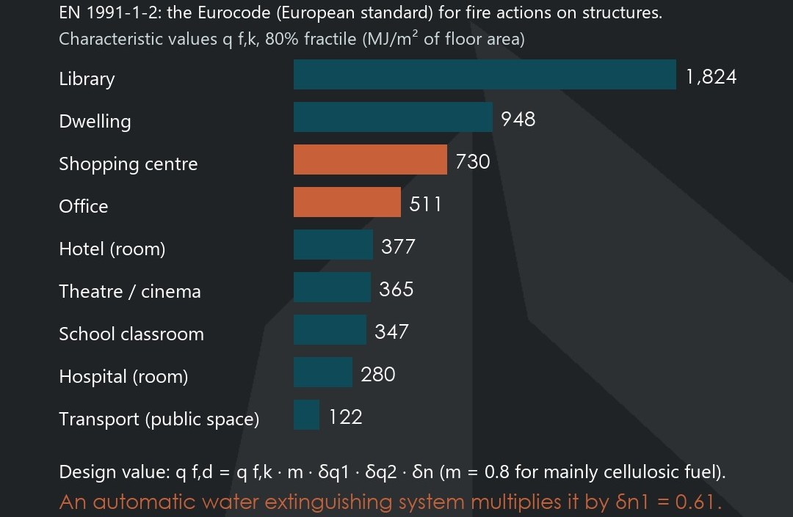
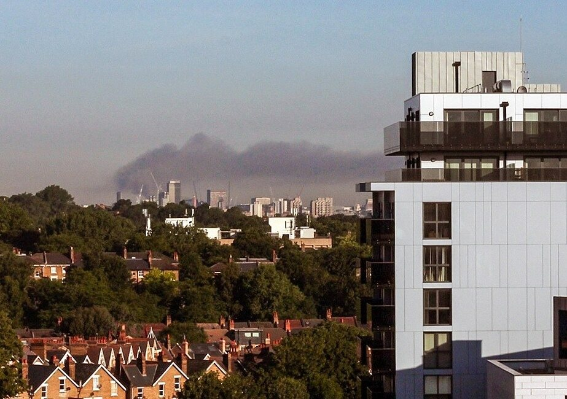

Flashover: the most dangerous stage of fire development
NIST's words. Photo: flashover training, MCAS Miramar, California, USA, 2005.
Fire behaviour starts with three sides and three paths
What fire needs: the fire triangle
Fuel
Anything that burns: linings, furniture, fabrics, stock.
Heat
Enough energy to ignite it; then the fire feeds itself.
Oxygen
From the air. A closed room can starve the fire.
How heat moves: 3 ways
Conduction
Through solids: walls, slabs, steel, pipes.
Convection
Hot smoke rises, then spreads under the ceiling.
Radiation
Heat beamed from flames and hot smoke to all in view.
Add an uninhibited chain reaction: the fire tetrahedron. Remove one side and combustion stops.
From the standards to one burning room
NFPA 921 defines the tetrahedron; Eurocode EN 1991-1-2 sets fire loads.
NIST's Station model: 2 to 54 MW in under 50 s.
Defines design fire scenario and fuel load (§3.4).
Growth, flashover, full fire, decay.
Fire behaviour in six numbers
How a room flashes over

Criteria, not constants: in 1/4-scale tests onset came at about 450 °C and 10–15 kW/m² (96 kPa).
Growth, flashover, fully developed, decay

Four t² growth classes

Heat release rate (HRR) sets flame height, smoke volume and whether flashover happens.
From 2 MW in under 50 s: The Station, 2003
NIST's model: more than 1 MW every second. The mock-up flashed over by 60 s; with NFPA 13 sprinklers, it did not.
Fire load density sets how long it burns


Smoke kills first
Smoke inhalation, not burns, is the major cause of fire deaths. Photo: Grenfell Tower smoke plume (left), London, 14 June 2017.
Write the design fire down
PAKISTAN · FSP 2016
- Defines fire model, design fire scenario, fuel load (§3.4)
- Rubbish containers > 0.15 m³: peak HRR 300 kW/m² at 50 kW/m²
- Scope: finishes that add fire load and smoke (§1.1.1)
EUROCODE + NIST
- Fire load by occupancy, 80% fractile (Annex E)
- Four t² growth classes as design inputs
- Full-scale tests behind code recommendations (NIST)
511 or 730 MJ/m²: which do you sprinkler first?
An office or a shopping floor: fire load, growth rate or occupants? Tell us why. Next: Ep 02.
Answer in the comments of the post that brought you here, or share it with a colleague:
Rana Mohsin Ali · Archiverse-Pakistan · 10 November 2026
Sources: NIST glossary, fire tetrahedron (citing NFPA 921:2017); NIST glossary (citing NFPA 921:2017); European Commission JRC Eurocode workshop (2012); NBN/CSTC Fiche EN 1991-1-2 (2008); NIST NCSTAR 2, Vol. 1 (2005); PEC, Building Code of Pakistan – Fire Safety Provisions 2016; NIST Fire Dynamics; Li et al., Fire 6 (2023) 415; PDHonline M282, Table B.1-1; Eggert & Huss, Scars Burns Heal. (2017)
Photos: US Marine Corps (unknown author), Public domain, via Wikimedia Commons; Prioryman, CC BY-SA 4.0, via Wikimedia Commons (cropped)